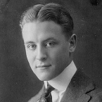
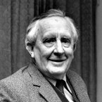
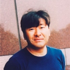

Лучшие цитаты
Пренебрежение здравым смыслом — верный путь к счастью.

Если хочешь что-либо сделать, никогда не спрашивай о последствиях. Иначе так ничего и не сделаешь.
Нельзя прожить свою жизнь для других. Надо выбрать то, что нужно именно тебе, даже если это не понравится близким.
Смысл жизни – в самой жизни. Цель жизни – в том, чтобы получать от нее удовольствие. Жизненный ориентир – самореализация.
Есть простое осознание, которое становится истоком всякого личного улучшения и роста. Это осознание: мы лично несем ответственность за все, что происходит в нашей жизни, каковы бы ни были внешние обстоятельства.

Лучше молчать и быть заподозренным в глупости, чем открыть рот и сразу рассеять все сомнения на этот счет.

Не осложняй себе жизнь запоздалыми сожалениями
Дай людям только заметить, что слова ранят тебя, и тебе никогда не избавиться от насмешек.
Мы живем, чтобы давать бой каждому новому дню.

Есть вещи, которые никогда не приносятся в жертву. За них нужно бороться до последнего…